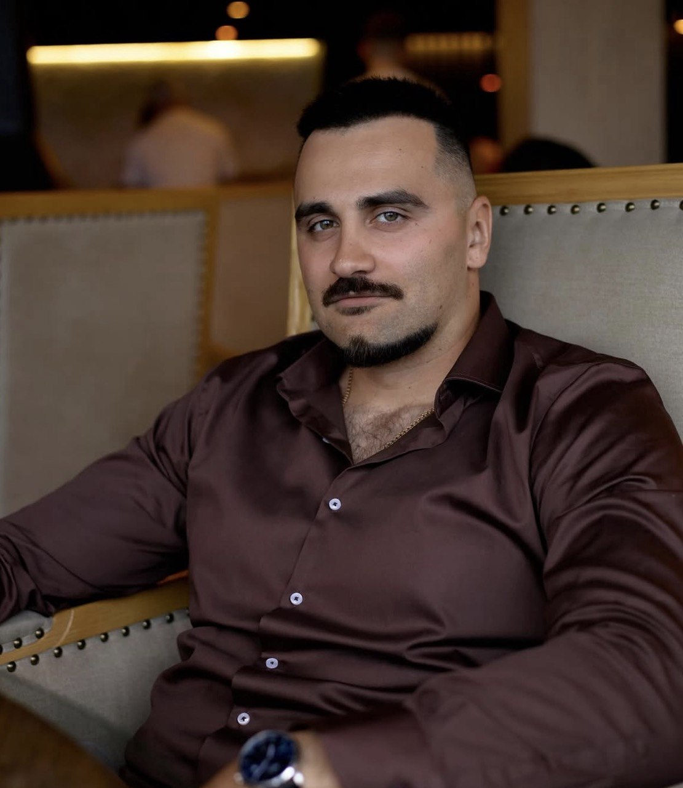

Senior · Lead Software Engineer
10 years of building high-performance software — compilers, EDA tools, protocol analyzers and security systems.
Explore
A systems-minded engineer with a decade of experience building software that other engineers depend on.
I specialise in cross-platform desktop and web applications development, maintaining CI/CD pipelines, software testing and performance analysis. My foundation is in C and C++, extended across a full range of languages and frameworks as the problem demands. I have an experience with troubleshooting complex software where modern AI tools loose hope.
I've led teams, mentored junior engineers, and taken ownership of architecture decisions — from low-level performance optimisation to integrating third-party libraries in large, long-lived codebases.
Based in Ukraine. Open to remote opportunities worldwide.
Designing and supporting cross-platform SDK for password management software used by industry leading products, teams and companies.
Leading development of protocol analyzer, exerciser, jammer, and verification tools for PCIe and CXL digital communication standards — products used by customers across the US, Europe, and Asia.
Contributed to ALINT-PRO, a design verification solution for RTL code in VHDL, Verilog, and SystemVerilog — covering coding style, simulation mismatches, FSM correctness, and synthesis optimisation.
Cross-platform suite of tools for developing secure solutions. In a world where the average consumer juggles over 100 online accounts, password managers are one of the “stickiest” products, offering simplicity and security in a few taps or clicks.
High-performance suite of tools for capturing, analyzing, verifying, and generating PCIe and PCIe-based SSD protocol traffic. Targets existing and emerging digital communication standards for hardware teams across three continents.
Design verification solution for RTL code written in VHDL, Verilog, and SystemVerilog. Verifies coding style, naming conventions, simulation mismatches, FSM descriptions, and post-synthesis correctness across complex digital designs.
Open to new opportunities, collaborations, and interesting problems.
Whether you're looking for a lead engineer, want to discuss a project, or simply want to connect — reach out.